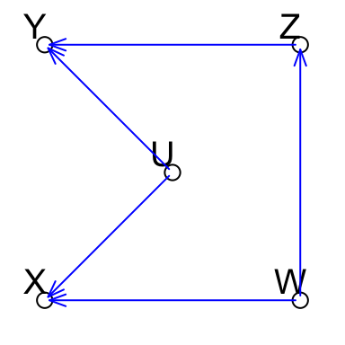
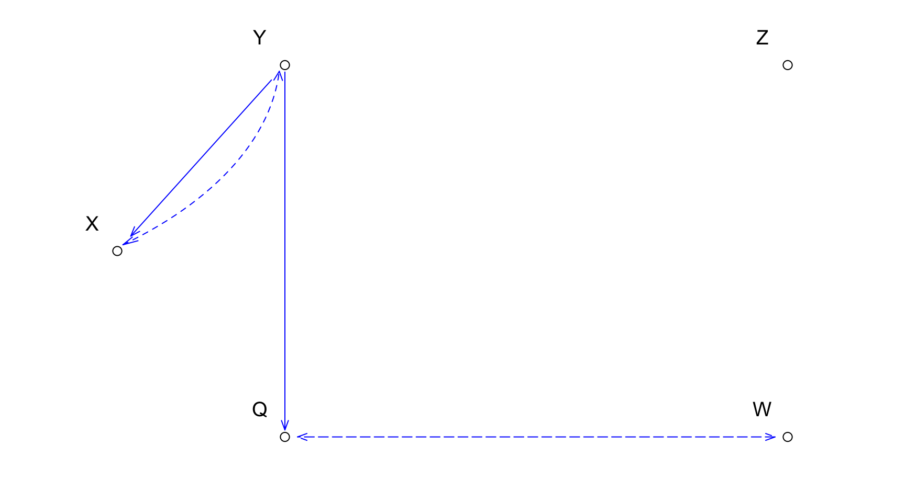

Graphical Markov Models with Mixed Graphs in R
1 Introduction
We provide a short tutorial illustrating the functions in the package ggm that deal with mixed graphs. A mixed graph can have 3 types of edges and they are important because they capture the modified independence structure after marginalization over and conditioning on nodes of directed acyclic graphs.
We provide functions
- to verify whether a mixed graph implies that \(A\) is independent of \(B\) given \(C\) for any disjoint sets of nodes, and
- to generate maximal graphs inducing the same independence structure of non-maximal graphs.
- Finally, we provide functions to decide on the Markov equivalence of two graphs with the same node set but different type of edges.
2 Introduction and background
Graphical Markov models have become a part of the mainstream of statistical theory and application in recent years. These models use graphs to represent conditional independencies among sets of random variables. Nodes of the graph correspond to random variables and edges to some type of conditional dependencies.
2.1 Directed acyclic graphs
In the literature of graphical models the two most used classes of graphs are the directed acyclic graphs (DAGs) and the undirected graphs. DAGs have been proven useful, among other things, to specify the data generating processes when the variables satisfy an underlying partial ordering.
For instance, suppose that we have 4 observed variables \(Y\), the ratio of systolic to diastolic blood pressure, \(X\) the diastolic blood pressure, both on log scale, \(Z\), the body mass and \(W\), the age, and that a possible generating process is the following linear recursive regression model \[ \begin{split} Y &=& \gamma_{YZ} Z + \gamma_{YU} U + \epsilon_Y\\ X &=& \gamma_{XW} W + \gamma_{XU} U + \epsilon_X\\ Z &=& \gamma_{ZV} W + \epsilon_Z\\ W &=& \epsilon_W; \; U = \epsilon_U; \end{split} \] where all the variables are mean-centered and the \(\epsilon\)s are zero mean, mutually independent Gaussian random errors. In this model we assume that there exist a genetic factor \(U\) influencing the ratio and levels of blood pressure.
Then, this model can be represented by the DAG in the following Figure, with nodes associated with the variables and edges, indicating the dependencies, represented by the regression coefficients \(\gamma\)s.
From the graph it is seen for instance that the ratio of the two blood pressures is directly influenced by body mass but not by age. Thus a consequence of the model is that the variables must satisfy a set of conditional independencies: for example the ratio of the blood pressure \(Y\) is independent of age \(W\) given body mass \(Z\), written as \(Y \ci W \mid Z\).
A remarkable result is that the independencies can be deduced from the graph alone, without reference to the equations, by using a criterion called d-separation.
In fact, in the graph of previous Figure the nodes \(Y\) and \(W\) are d-separated given \(Z\) as can be checked using special graph algorithms included for example in packages gRain and ggm.
For more details on DAG models and their implementation in R see the extensive discussion in .
2.3 Stable mixed graphs
The previous illustrations show that when there are unobserved variables, DAG or regression chain graph models are no longer appropriate. The discussion could be extended to situations where there are some selection variables, that is hidden variables that are conditioned on.
This motivates the introduction of a more general class of , which contains three types of edge, denoted by lines, \(-\!\!-\), arrows, \(\rightarrow\), and arcs (bi-directed arrows), \(\leftrightarrow\).
There are at least three known classes of mixed graphs without self loops that remain in the same class, i.e. that are stable under marginalisation and conditioning.
The largest one is that of ribbonless graphs (RGs), , defined as a modification of MC-graphs .
Then, there is the subclass of summary graphs (SGs) ,
and finally the smallest class of the ancestral graphs (AGs), .
2.4 Four tasks of the current paper
In this paper, we focus on the implementation of four important tasks performed on the class of mixed graphs in R:
- Generating different types of stable mixed graphs after marginalisation and conditioning.
- Verifying whether an independency of form \(Y\ci W\mid Z\) holds by using a separation criterion called \(m\)-separation.
- Generating a graph that induces the same independence model as an input mixed graph such that the generated graph is maximal, i.e. each missing edge of the generated graph implies at least an independence statement.
- Verifying whether two graphs are Markov equivalent, i.e. they induce the same independencies, and whether there is a Markov equivalent graph of a different type to an input graph of a specific type.
In the next section we give the details on how general mixed graphs are defined in package ggm. Next in each of the following sections we respectively deal with each of the tasks described above. For each task we give a brief introduction at the beginning of its corresponding section.
2.5 Package ggm
The previous tasks are illustrated by using a set of new functions introduced into the R package ggm. Some of the functions generalize previous contributions of ggm discussed in .
Package ggm has been improved and it is now more integrated with other contributed packages related to graph theory, such as graph, igraph , and gRbase , which are now required for representing and plotting graphs.
Specifically, in addition to adjacency matrices, all the functions in the package now accept graphNEL and igraph objects as input, as well as a new character string representation. A more detailed list of available packages for graphical models can be found at CRAN Task View gRaphical Models in R.
3 Defining mixed graphs in R
For a comprehensive discussion on the ways of defining a directed acyclic a graph, see . A mixed graph is a more general graph type with at most three types of edge: directed, undirected and bi-directed, with possibly multiple edges of different types connecting two nodes.
In ggm we provide some special tools for mixed graphs that are not present in other packages. Here we briefly illustrate some methods to define mixed graphs and we plot them with a new function, plotGraph, which uses a Tk GUI for basic interactive graph manipulation.
The first method is based on a generalization of the adjacency matrix.
The second uses a descriptive vector and is easy to use for small graphs.
The third uses a special function
makeMGthat allows to combine the directed, undirected and bi-directed components of a mixed graph.
3.1 Adjacency matrices for mixed graphs
In the adjacency matrix of a mixed graph we code the three different edges with a binary indicator:
- 1 for directed,
- 10 for undirected and
- 100 for bi-directed edges.
When there are multiple edges the codes are added.
Thus the adjacency matrix of a mixed graph \(H\) with node set \(N\) and edge set \(F\) is an \(|N|\times|N|\) matrix obtained as \(A=B+S+W\) by adding three matrices \(B = (b_{ij})\), \(S = (s_{ij})\) and \(W = (w_{ij})\) defined by
\[ \begin{split} b_{ij} &=& \begin{cases} 1, & \text{ if and only if } i \rightarrow j \text{ in } H; \\ 0, & \text{otherwise.}\\ \end{cases}\\ s_{ij}=s_{ji}&=& \begin{cases} 10, & \text{if and only if } i -\!\!\!- j \text{ in } H; \\ 0, & \text{otherwise.} \end{cases}\\ w_{ij}=w_{ji}&=& \begin{cases} 100, & \text{if and only if } i\leftrightarrow j \text{ in } H; \\ 0, & \text{otherwise.} \end{cases} \end{split} \] Notice that because of the symmetric nature of lines and arcs \(S\) and \(W\) are symmetric, whereas \(B\) is not necessarily symmetric.
For instance the following graph is a mixed graph (Notice that this mixed graph is not even ribbonless and hence of not much interest, and has been only introduced for presentation purposes):
R
mg <- matrix(c( 0, 101, 0, 0, 110,
100, 0, 100, 0, 1,
0, 110, 0, 1, 0,
0, 0, 1, 0, 100,
110, 0, 0, 100, 0), 5,5, byrow = TRUE)
N <- c("X","Y","Z","W","Q")
dimnames(mg) <- list(N, N)
drawGraph(mg, coor = matrix(c(10, 50, 30,90, 90,90,
90, 10, 30, 10),
ncol = 2, byrow = TRUE))
The graph can be plotted also with plotGraph(mg).
There are four general classes of stable mixed graphs.
Ribbonless graphs are mixed graphs without a specific set of subgraphs called ribbons. The lack of ribbons ensures that, for any RG, there is a DAG whose independence structure, i.e. the set of all conditional independence statements that it induces, after marginalisation over and conditioning on two disjoint subsets of its node set can be represented by the given RG. This is particularly essential as it shows that the independence structures corresponding to RGs are probabilistic, that is there exists a probability distribution \(P\) that is faithful with respect to any RG, i.e. for random vectors \(X_A\), \(X_B\), and \(X_C\) with probability distribution \(P\), \(X_A\cip X_B\cd X_C\) if and only if \(\langle A,B\cd C\rangle\) is in the induced independence structure by the graph. This probability distribution is the marginal and conditional of a probability distribution that is faithful to the generating DAG.
Summary graphs have neither arrowheads pointing to lines (i.e. \(\arc\circ\ful\) or \(\fra\circ\ful\)) nor directed cycles with all its arrows pointing towards one direction. Ancestral graphs have these two constraint together with an additional constraint that these graphs do not contain so-called , see .
However, notice that for some ribbonless and summary graphs the corresponding parametrisation is sometimes not available even in the case of standard joint Gaussian distribution.
If we suppose that stable mixed graphs are only used to represent the independence structure after marginalisation and conditioning, we can consider all types as equally appropriate. However, each of the three types has been used in different context and for different purposes. RGs have been introduced in order to straightforwardly deal with the problem of finding a class of graphs that is closed under marginalisation and conditioning by a simple process of deriving them from DAGs. SGs are used when the generating DAG is known and to trace the effects in the sets of regressions as described above. AGs are simple graphs, meaning that they do not contain multiple edges and the lack of bows ensures that they satisfy many desirable statistical properties.
In addition, when one traces the effects in regression models with latent and selection variables (as described in the introduction) ribbonless graphs are more alerting to possible distortions (due to indirect effects) than summary graphs, and summary graphs are more alerting than ancestral graphs; see also . For the exact definition and a thorough discussion of all such graphs, see .
also defines the algorithms generating stable mixed graphs of a specific type for a given DAG or for a stable mixed graphs of the same type after marginalisation and conditioning such that they induce the marginal and conditional DAG-independence structure. We implement these algorithms in this paper.
% %We start by illustrating some ways of defining directed acyclic graphs in R. %We shall use four graph representations, that is %(a) by objects, (b) by objects, (c) by adjacency matrices, (d) by character %vectors. These same representations will be extended to general mixed graphs in the next section. %The package provides the class for %graphs that are represented in terms of nodes and an edge list. %These graphs can be either directed or undirected, with no multiple edges or self-loops. The package provides the function for easily defining DAGs as % objects. One way in which the graph can be specified is by a list %of formulas. For example, one can define a DAG by the following formula, where, for example, implies that \(h\) has parents \(p\) and \(r\). For reference, we plot the DAG after the explanations related to the formula, by using the % function . %
% %<<>>=% 2 %exdag <- dag(~r, ~qr, ~p, ~hpr, ~l, % ~kl, ~jk, ~ihlj) %exdag %@ %Notice that one cannot use integers as node labels in objects. %In addition, instead of*'' a:’’ can be used in the specification. To retrieve the nodes and edges of the DAG the functions and are used. Thus for instance, %<<>>=% 3 %nodes(exdag) %@ %To plot a DAG as a object one can use the function in the package or %various plotting options within the package (see below). %Our recommended way is to use a defined function as follows: %<<eval=false>>= %plotGraph(exdag) %@ %\begin{center} % %\end{center} %
In package there are many %ways of defining DAGs as objects; for the full list see . %Probably the most handy way of generating small graphs is to use . In this function we use -'' as edges and+’’ as arrowheads. For example, for the same DAG as before, we use %<<>>= % 4 %exdag <- graph.formula(q+-r-+h+-p, % h-+i+-l-+k, i+-j+-k) %exdag %@ %It is always possible to convert graphs to objects or back using the and functions. % %Also, the package contains several options for plotting graphs such as the function % . This is a quite flexible function providing an interactive graph drawing facility based on Tcl-Tk. %Our function is just a convenient wrapper of this function. %
Any graph can be defined by an . % The adjacency matrix of a loopless directed graph \(G\) with node set \(V\) and edge set \(E\) is the matrix \(A=(a_{ij})\) of size \(|V|\times |V|\) with zeros on the diagonal and %\[
%a_{ij}=\begin{cases}
% 1, & \text{ if } i\fra j; \\
% 0 & \text{otherwise.}\\
% \end{cases}
%\] %An adjacency matrix can be defined directly without defining a or object. %For instance the adjacency matrix of the previous DAG can be created via: % %<<>>= % 5 %A <- matrix(0,8,8) %A[8,7] <- A[8,5] <- A[6,5] <- A[5,1] <- %A[4,1] <- A[4,3] <- A[2,1] <- A[3,2] <- 1 %A %@ %All functions in package accept adjacency matrices as defining graphs. If the node names are %not provided, the functions would specify by default as labels the integers \(\langle 1,\dots,n\rangle\), %where \(n\) is the number nodes. Thus the defined adjacency matrix defines the following graph: %<<eval=FALSE>>= % 6 %plotGraph(A) %@ %\begin{center} % %\end{center} %The node labels are obtained by including appropriate to the matrix: %<<>>= %V <- c(“i”,“j”,“k”,“l”,“h”,“p”,“q”,“r”) %dimnames(A) = list(V, V) %@ %An adjacency matrix for the DAG can be also obtained using the function in . %This function accepts as input a model formula an returns the adjacency matrix with the appropriate labels. %For the same DAG, which we call , we can write %<<>>= %exdag <- DAG(i ~ j+l+h, k~l, h~r+p, q ~ r) %@ %The function also verifies whether the resulting graph is acyclic. By ``generating graphs’’ we mean applying the defined algorithms, e.g. those for generating stable mixed to graphs, in order to generate new graphs.
Three main functions , , and are available to generate and plot ribbonless, summary, and ancestral graphs from DAGs, using the algorithms in . These algorithms look for the paths with three nodes and two edges in the graph whose inner nodes are being marginalized over or condition on, and generate appropriate edges between the endpoints. These have two important properties: (a) they are well-defined in the sense that the process can be performed in any order and produces always the same final graph; (b) the generated graphs induce the modified independence structure after marginalization and conditioning; see for more details.
The functions , , and all have three arguments: the given input graph, , the marginalization set and , the conditioning set. The graph may be of class or of class or may be represented by a character vector, or by an adjacency matrix, as explained in the previous sections. The sets and (default ) must be disjoint vectors of node labels, and they may possibly be empty sets. The output is always the adjacency matrix of the generated graph. There are two additional logical arguments and to specify whether the adjacency matrix must be explicitly printed (default ) and the graph must be plotted (default ).
We start from a DAG defined in two ways, as an adjacency matrix and as a character vector: <<>>= % 9 ex <- matrix(c(0,1,0,0,0,0,0,0, 0,0,1,0,0,0,0,0, 0,0,0,0,0,0,0,0, 0,0,1,0,1,0,1,0, 0,0,0,0,0,1,0,0, 0,0,0,0,0,0,0,0, 0,0,0,0,0,1,0,0, 0,0,0,0,0,1,1,0),8,8,byrow=TRUE) exvec <- c(“a”,1,2,“a”,2,3,“a”,4,3, “a”,4,5,“a”,4,7,“a”,5,6, “a”,7,6,“a”,8,6,“a”,8,7) @ <<eval=FALSE>>= % 10 plotGraph(ex) @ %%%%%%%%%%%%%%%%%%%%%%%%%%%%%%%%%%%%%%%%%%%%%%%%%%%%%%%%%% %%%%%%%%%%%%%%%%%%%%%%%%%%%%%%%%%%%%%%%%%%%%%%%%%%%%%%%%%% Then we define two disjoint sets \(M\) and \(C\) to marginalize over and condition on <<>>= M <- c(5,8) C <- 3 @ and we generate the ribbonless, summary and ancestral graphs from the DAG with the associated plot. <<eval = false>>= % 11 RG(ex, M, C, plot = TRUE) @ <<echo = false>>= RG(ex, M, C) @ The summary graph is plotted with dashed undirected edges instead of bi-directed edges: <<eval = false>>= % 12 plotGraph(SG(ex,M,C), dashed = TRUE) @ <<echo = false>>= SG(ex, M, C) @ The induced ancestral graph is obtained from the DAG defined as a vector. <<eval = false>>= % 13 AG(exvec,M,C,showmat=FALSE, plot=TRUE) @ %%%%%%%%%%%%%%%%%%%%%%%%%%%%%%%%%%%%%To globally verifying whether an independence statement of form \(A\ci B \ci C\) is implied by a mixed graph we use a separation criterion called . This has been defined in for the general class of loopless mixed graphs and is the same as the \(m\)-separation criterion defined in for ancestral graphs. It is also a generalisation of the \(d\)-separation criterion for DAGs . This is a graphical criterion that looks if the graph contains special paths connecting two sets \(A\) and \(B\) and involving a third set \(C\) of the nodes. These special paths are said to be active or \(m\)-connecting. For example, a directed path from a node in \(A\) to a node in \(B\) that does not contain any node of \(C\) is \(m\) connecting \(A\) and \(B\). However, if such a path intercepts a node in \(C\) then \(A\) and \(B\) are said to be \(m\)-separated given \(C\). However, this behaviour can change if the path connecting \(A\) and \(B\) contains a collision node or a for short, that is a node \(c\) where the edges meet head-to-head, like e.g., \(\fra c\fla\) or $c $.
In general, a path is said to be given \(C\) if all its collider nodes are in \(C\) or in the set of ancestors of \(C\), and all its non-collider nodes are outside \(C\). For two disjoint subsets of the node set \(A\) and \(B\), we say that \(C\) \(m\)-separates \(A\) and \(B\) if there is no \(m\)-connecting path between \(A\) and \(B\) given \(C\). This separation criterion has been implemented in R and the related function is provided in .The fundamental way to verify if a graphical model implies an independence \(A \cip B |C\) is to test whether the disjoint subsets \(A\) and \(B\) of the node set are \(m\)-separated given a third set \(C\), and this may be done with the function . Note that there is still a function in for \(d\)-separation, although it is superseded by .
The function has 4 arguments, where the first is the graph , in one of the forms discussed before, and the other three are the disjoint sets , and . For example, consider the DAG of Figure~\(\ref{dags}\)(a): <<>>= % 18.2 a <- DAG(Y ~ U + Z, X ~ U + W, Z ~ W) @
Then, we see that \(Y\) and \(W\) are \(m\)-separated given \(Z\): <<>>= %18.3 msep(a,“Y”,“W”,“Z”) @ and the same statement holds for the induced ancestral graph after marginalization over : <<>>= %18.4 b <- AG(a, M = “U”) msep(b,“Y”,“W”,“Z”) @ This was expected because the induced ancestral graph respects all the \(m\)-separation statements present in the DAG, and not involving the variable .
As a more complex example, consider the following mixed graph, <<>>= % 19 a <- makeMG(dg= DG(W ~ Z, Z ~ Y + X), bg= UG(~ Y*Z)) @ <<eval = false>>= % 20 plotGraph(a) @ %%%%%%%%%%%%%%%%%%%%%%%%%%%%%%%%%%%%%%%%%%%%%%%%%%%%%%%%%% %%%%%%%%%%%%%%%%%%%%%%%%%%%%%%%%%%%%%%%%%%%%%%%%%%%%%%%%%%Then, the two following statements verify whether is \(m\)-separated from given , and whether is \(m\)-separated from (given the empty set): <<>>= %21 msep(a,“X”,“Y”,“Z”) msep(a,“X”,“Y”) @ In this example \(m\)-separation is equivalent to its special case, the \(d\)-separation criterion for DAGs.
%%%%%%%%%%%%%%%%%%%%%%%%%%%%%%%%%While for many subclasses of graphs a missing edge corresponds to some independence statement, for the more complex classes of mixed graphs this is not necessarily true. A graph where each of its missing edges is related to an independence statement is called a . For a more detailed discussion on maximality of graphs and graph-theoretical conditions for maximal graphs, see and . also gave an algorithm for generating maximal ribbonless graphs that induce the same independence structure to an input non-maximal ribbonless graph. This algorithm has been implemented here in as illustrated below.
Given a non-maximal graph, we can obtain the adjacency matrix of a maximal graph that induces the same independence statements with the function . This function uses the algorithm by , which is an extension of the implicit algorithm presented in . The related functions , , and , are just handy wrappers to obtain maximal AGs, SGs and AGs, respectively. For example, <<>>= % 14 H <- matrix(c(0 ,100, 1, 0, 100,0 ,100, 0, 0 ,100, 0,100, 0, 1 ,100, 0),4,4) @ <<eval=FALSE>>= %15 plotGraph(H) @ %%%%%%%%%%%%%%%%%%%%%%%%%%%%%%%%%%%%%%%%%%%%%%%%%%%%%%%%%% %%%%%%%%%%%%%%%%%%%%%%%%%%%%%%%%%%%%%%%%%%%%%%%%%%%%%%%%%% is a mixed non-maximal graph, with the missing edge between nodes 1 and 4 that is not associated with any independence statement. Its associated maximal graph is obtained by <<>>= %16 Max(H) @ <<eval=FALSE>>= %17 plotGraph(Max(H)) @As the graph is an ancestral graph (as may be verified by the function ), we obtain the same result with <<>>= %18 MAG(H) @
%%%%%%%%%%%%%%%%%%%%%%%%%%%%%%%%%%%%%%%%%%Two graphical models are said to be Markov equivalent when their associated graphs, although nonidentical, imply the same independence structure, that is the same set of independence statements. Thus two Markov equivalent models cannot be discriminated on the basis of statistical tests of independence, even for arbitrary large samples. For instance, the two directed acyclic graphs models \(X \fla U \fra Y\) and \(X \fla U \fla Y\) both imply the same single independence statement between \(X\) and \(Y\) conditionally on \(U\).
Sometimes, we can check whether graphs of different types are Markov equivalent. For instance the DAG \(X \fra U \fla Y\) is Markov equivalent to the bi-directed graph \(X \arc U \arc Z\).
Markov equivalent models may be useful in applications because (a) the may suggest alternative interpretations of a given well-fitting model or (b) on the basis of the equivalence one can choose a simpler fitting algorithm. For instance, the previous bi-directed graph model may be fitted, using the Markov equivalent DAG, in terms of a sequence of univariate regressions.
In the literature several problems related to Markov equivalences have been discussed. These include (a) verifying the Markov equivalence of given graphs, (b) presenting conditions under which a graph of a specific type can be Markov equivalent to a graph of another type, and (c) providing algorithms for generating Markov equivalent graphs of a certain type from a given graph.
The function tests whether two regression chain graphs are Markov equivalent. This function simply finds the skeleton and all unshielded collider V-configurations in both graphs and tests whether they are identical, see . The arguments of this function are the two graphs and in one of the allowed forms. For example,
<<>>= H1 = makeMG(dg = DAG(4 ~ 1, 5 ~ 3), bg = UG(~ 12 + 23 + 45)) H2 = makeMG(dg = DAG(4 ~ 1, 5~ 3, 2 ~ 1 + 3), bg = UG(~ 45)) H3 = DAG(4~1, 5~3 + 4,2~1 + 3) @ <<eval = false>>= plotGraph(H1); plotGraph(H2); plotGraph(H3) @
We can now verify Markov equivalence as follows <<>>= MarkEqRcg(H1,H2) MarkEqRcg(H1,H3) MarkEqRcg(H2,H3) @ To test Markov equivalence for maximal ancestral graphs the algorithm is computationally much more demanding (see ) and, for this purpose, the function has been provided. Of course, one can use this function for Markov equivalence of regression chain graphs (which are a subclass of MAGs). For example, <<>>= A1<- makeMG(dg = DG(4~2), bg = UG(~ 12 + 23 + 34)) A2<- makeMG(dg = DG(4~2, 2~1), bg = UG(~ 23 + 34)) A3<- makeMG(dg = DG(4~2, 2~1, 3~1), bg = UG(~ 34)) @ <<eval = false>>= plotGraph(A1); plotGraph(A2); plotGraph(A3) @ %%%%%%%%%%%%%%%%%%%%%%%%%%%%%%%%%%%%%%%%%%%%%%%%%%%%%%%%%% %%%%%%%%%%%%%%%%%%%%%%%%%%%%%%%%%%%%%%%%%%%%%%%%%%%%%%%%%%
<<>>= MarkEqMag(H1,H2) MarkEqMag(H1,H3) MarkEqMag(H2,H3) @
Sometimes is important to verify if a given graph is capable of being Markov equivalent to a graph of a specific class of graphs (such as DAGs, undirected graphs, or bidirected graphs), and if so, to obtain as a result such a graph. The functions , , and do this for DAGs, undirected graphs, or bidirected graphs, respectively. For associated conditions and algorithms, see . For example, given the following graph <<>>= H <- matrix(c( 0,10, 0, 0, 10, 0, 0, 0, 0, 1, 0,100, 0, 0,100, 0),4,4) @ <<eval=FALSE>>= plotGraph(H) @ %%%%%%%%%%%%%%%%%%%%%%%%%%%%%%%%%%%%%%%%%%%%%%%%%%%%%%%%%% %%%%%%%%%%%%%%%%%%%%%%%%%%%%%%%%%%%%%%%%%%%%%%%%%%%%%%%%%%
we can see that it is Markov equivalent to a DAG, by <<>>= RepMarDAG(H) @ <<eval=FALSE>>= plotGraph(RepMarDAG(H)) @
On the other hand it is not Markov equivalent to an undirected graph or to a bidirected graph. <<>>= RepMarUG(H) RepMarBG(H) @ %This has consequence on the possibility of using %standard fitting algorithms for DAG models to estimate %the parameters of a model for the first graph.
The authors are grateful to Steffen Lauritzen for helpful suggestions on codes and comments on an earlier version of the paper and Nanny Wermuth and the referees for their insightful comments.
\end{document}